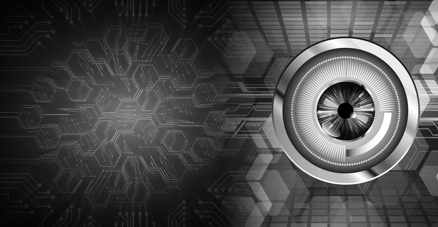

Engineering the software layer of the next-generation vehicle
Inside Embitel's SDV Offerings
The authoritative self-understanding of Embitel's Software-Defined Vehicle business — sourced from the Embitel knowledge repository and cross-checked by browsing Embitel's own site. This is ground truth for every downstream module.
End-to-end capabilities for the next generation of mobility — organized around the vehicle itself.
Claimed 50% reduction in time-to-market via pre-built middleware for power management, location services, driver monitoring, and data logging.
AWS-based, Kubernetes/Kafka/Lambda microservices, A/B partition updates, automatic rollback, Uptane-ready security. Tested across 350+ scenarios and 10,000+ devices.
- Volkswagen Group pedigree via CARIAD India + TISAX AL3 certification
- Full-stack breadth: hardware + software + integration + testing
- ~20 years of automotive/embedded experience
- Turnkey/end-to-end focus — not headcount-driven outsourcing
- 8M+ vehicles running Embitel software across VW Group brands
- AutoTech Awards 2026 — Testing & Validation Excellence
Positioning statement: Embitel positions itself as a top-tier SDV engineering partner — an implementation expert in cutting-edge SDV technology, not a headcount/staffing vendor. Core messaging pillars: Volkswagen Group pedigree, end-to-end turnkey engineering, one of India's largest ADAS teams, the "GCC+" operating model, and a talent/culture story.
Five Rivals, Mapped Move by Move
Five SDV Competitors, Validated
Technology service/solution providers with SDV capability overlap with Embitel — never OEMs or Tier-1s. Researched via company websites and cross-checks (Sept 2026).
Near-total stack overlap; identical "software-hardware decoupling" SDV narrative. Closest like-for-like match.
Named SDV product suite (AVENIR); strong OEM partnerships (JSW Motors).
Closest in company scale (~2,000 employees). "Chip to Cognition" positioning.
REFACTO, eVOLTTS, EDGYneer, SafeX, AnnotAI — accelerator strategy mirrors Embitel's own.
Arrow Electronics subsidiary. Explicit SDV self-positioning; dual India/US presence.
| KPIT | Tata Elxsi | Sasken | LTTS | eInfochips | |
|---|---|---|---|---|---|
| Strong Overlap | AUTOSAR, ADAS, EV, embedded eng. | Cybersecurity, cockpit/HMI | ADAS, telematics, AUTOSAR | AUTOSAR, ADAS, EV, functional safety | ADAS, EV/BMS, V2X, AUTOSAR |
| Embitel Differentiated | VW Group + CARIAD access vs. ~7-8x headcount | VW pedigree, TISAX AL3 vs. broader UX brand | VW backing, AutoTech Award 2026 | VW pedigree vs. independent public co. | Direct VW program access vs. Arrow parentage |
| Competitor Stronger | ~13,000 employees, $610M revenue, global footprint | Named SDV brand (AVENIR) + JSW deal | Diversified platform experience, Tata Autocomp JV | 5 named accelerators, analyst "Leader," $1.24B revenue | ASPICE v3.1, silicon-vendor partnerships |

Watching Every Signal Competitors Send
Competitor PR Activity, Sourced
Every competitor's PR/media footprint, tagged FACT / INSIGHT / OPPORTUNITY with sources. Research window: Sept 2025–Sept 2026.
WebSearch was unavailable in this pass (proxy-blocked); research used Bing News + direct WebFetch verification — agreed with Anne as a "solid, honestly-scoped" substitute. Zero-result gaps (events, podcasts, YouTube) are flagged throughout as possible tool limitations, not confirmed competitor silence.
- Named-partner press releases
- "SDV" self-positioning language
- Wire/syndicated distribution
- AVENIR suite (Tata Elxsi only)
- CES events (Tata Elxsi only)
- Analyst recognition (eInfochips only)
- Cybersecurity-led narrative (Sasken only)
- ADAS-specific earned coverage
- OTA/FOTA competitor-specific stories
- CEO thought leadership (except KPIT)
- Podcasts / YouTube — zero findings
- KPIT, Mercedes-Benz to accelerate software-defined vehicle development. Yahoo Finance, Apr 2025
- CES 2026 | Autolink and Tata Elxsi Sign MoU. Yahoo Finance / PR Newswire, Jan 2026
- Sasken teams up with VicOne for automotive cybersecurity. Just Auto, Sept 2025
- Key win in LTTS' Mobility Segment across multiple vehicle technology domains. Ad-hoc-news, Jan 2026
- eInfochips Recognized as a 'Rising Star' in ISG Provider Lens™ 2025. ABC27 / PR Newswire, Jul 2025
- Tata Elxsi and Suzuki open new engineering centre for SDVs. Just Auto, 2025
Turning PR Noise Into a Strategic Map
Where Embitel Should Play
Synthesizing Module 3's raw intelligence into a strategic view: media visibility, executive presence, event coverage, and — most importantly — the white space Embitel can claim.
| Category | KPIT | Tata Elxsi | Sasken | LTTS | eInfochips |
|---|---|---|---|---|---|
| Wire/Business Press | ●●● | ●●● | ●● | ●● | ●● |
| Automotive Trade Press | None | Strong | 1 hit | None | None |
| CEO/Executive Interviews | Multiple | None | None | None | 1 byline |
| Analyst Reports | None | None | None | None | ISG Rising Star |
| Event Coverage (CES/IAA) | None | Strong | None | None | None |
| Podcasts/Video | None | None | None | None | None |
Six Strategic White-Space Opportunities
- ADAS-specific PR push — uncontested despite being core to all five competitors' capabilities
- Consistent CEO/senior spokesperson — only KPIT owns this; high-ROI differentiator
- Analyst-source recognition — only eInfochips holds this; Gartner/S&P Global/ABI Research still open
- Direct trade-press relationships — Autocar Professional, ET Auto, EE Times remain underutilized
- Event/conference presence — only Tata Elxsi verified at CES; high-visibility opening
- OTA/FOTA in earned media — Embitel's own accelerator has zero competitor overlap in coverage
| Dimension | KPIT | Tata Elxsi | Sasken | LTTS | eInfochips |
|---|---|---|---|---|---|
| Core Narrative | AI + middleware | Ecosystem integrator | Cybersecurity specialist | Multi-domain scale | Analyst-backed |
| Executive Visibility | Strong (CEO) | Moderate (BU) | Weak (Practice) | Weak (BU) | Weak (unconfirmed) |
| Event Presence | Not verified | Strong | Not verified | Not verified | Not verified |
| Analyst Recognition | None | None | None | None | ISG Rising Star |
| Differentiation Strength | High | High | Medium | Low | Medium |